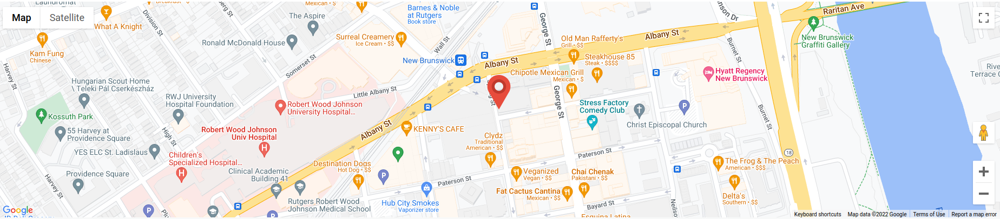

Physics-aware Research for Autonomous Computational SYStems (PRACSYS) Lab
The "Physics-aware Research for Autonomous Computational SYStems” (PRACSYS) Lab at Rutgers University (RU) conducts research in Algorithmic Robotics: Robot Planning, Data-driven Control and Perception. Applications include manipulation, locomotion and navigation, with a focus on novel soft mechanisms and multi-robot problems.
